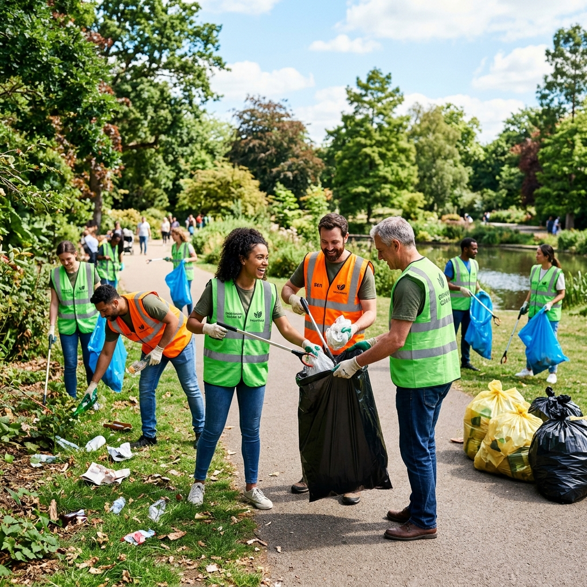
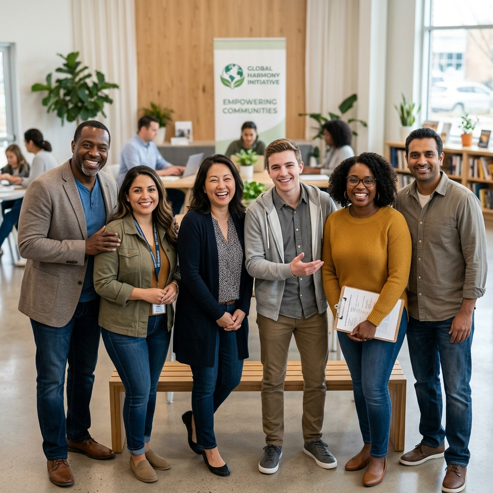
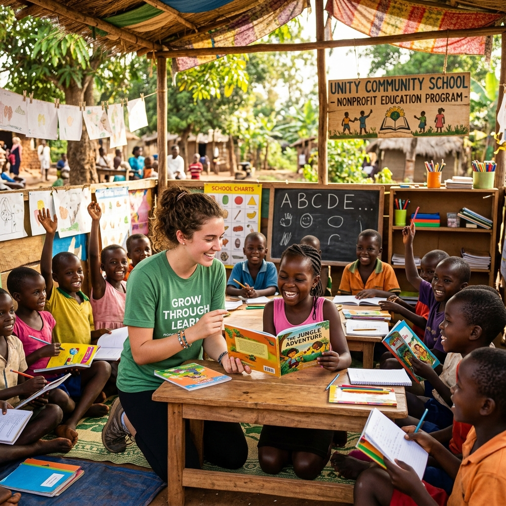

Ongoing
🌿 Environment
City & River Cleanup Campaign
Our flagship cleanup program mobilizes hundreds of volunteers monthly to collect waste from streets, parks and riverbanks — restoring beauty and health to our communities.
Agrapathik unites passionate volunteers for environmental restoration, community education, and lasting social change across Bangladesh. Every action counts.

Agrapathik (অগ্রপথিক — "Pioneer") was founded in 2025 by young changemakers who believed real transformation starts at the grassroots level. Today, we are a thriving network of over 4,800 volunteers spread across 52 districts.
We work on environmental restoration, youth education, community cleanliness, food security, and disaster response — because every person deserves a clean, safe, and dignified life.
From planting trees to teaching children — every initiative is powered by passionate volunteers.

Our flagship cleanup program mobilizes hundreds of volunteers monthly to collect waste from streets, parks and riverbanks — restoring beauty and health to our communities.

We operate 24 free learning centers where volunteer teachers provide quality education, digital literacy, and life skills to underprivileged children across Dhaka and Chittagong.

Our reforestation program has planted over 18,000 GPS-tagged trees in degraded lands and urban areas. Each tree is monitored to ensure survival and sustained environmental impact.
Impact is the smile of a child who learned to read, the clean river that used to be a dump, the family that no longer goes hungry. We track every milestone.

Join thousands of volunteers already creating positive change. Your time and commitment can transform lives — including your own.